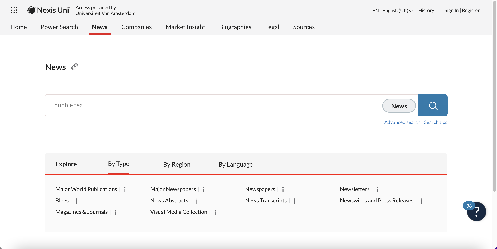
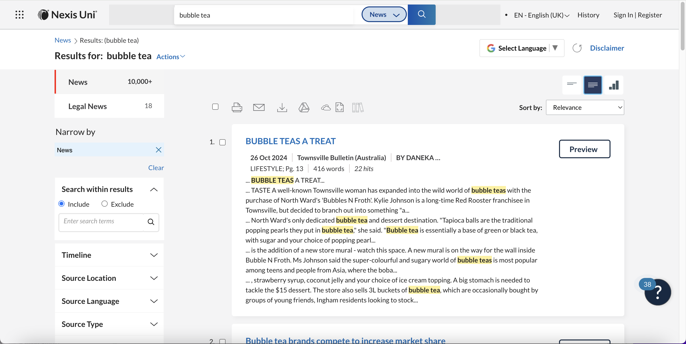
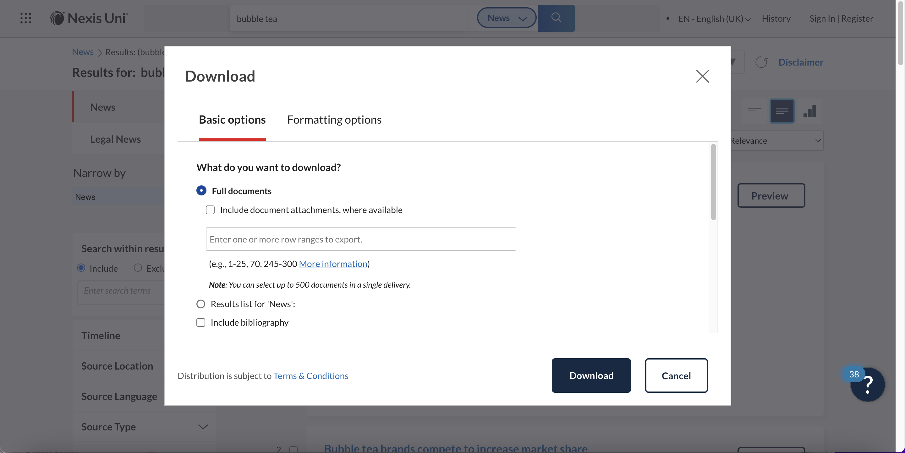
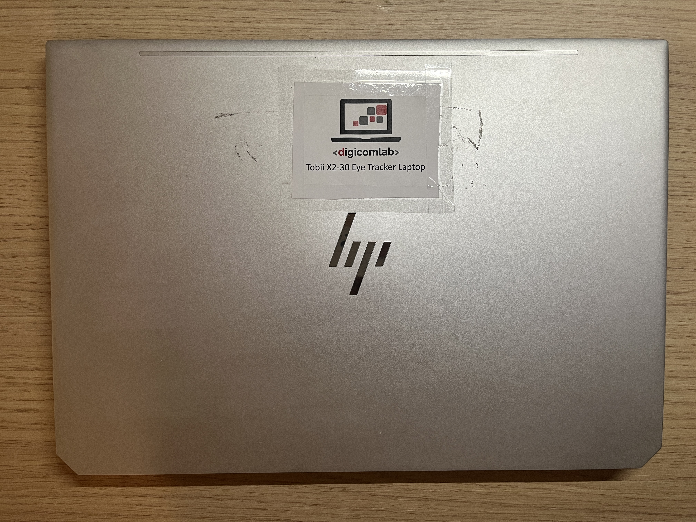
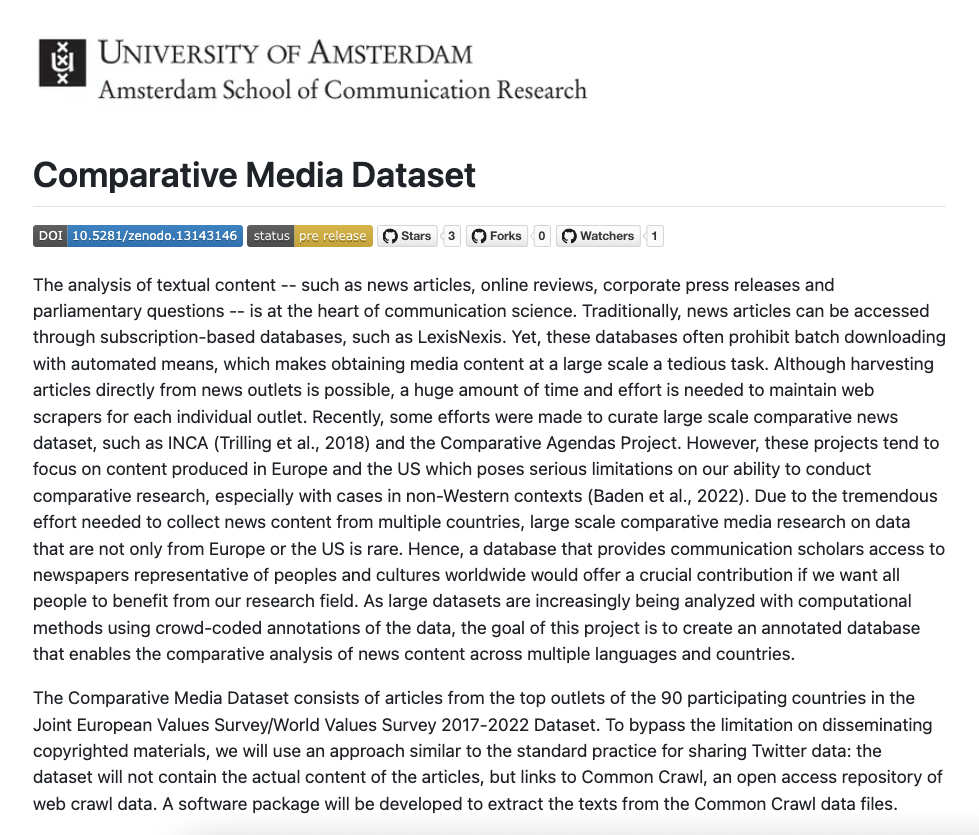

ASCoR Mid-Size Collaborative Research Projects Grant
Our struggles to build the
Comparative Media Dataset from Web Crawl Data
Justin Chun-ting Ho, Marthe Möller,
Joanna Strycharz, Anne Kroon
Amsterdam School of Communication Research





Also..
- Rate limits after ONE request
- Did I mention it returns data in PDF?
Alternatives?
- NexiLexis API? It costs €11.850 (for 10.000 articles)
- Webscraping? Extremely time consuming
- Existing dataset? Limited data and mostly US/Europe cases
Our Proposed Solution
The Comparative Media Dataset
- Top outlets in 16 countries (5 in Europe, 5 in Asia, 5 in Americas, and 1 in Africa)
- 600 annotators per country
- 6 concepts from most cited papers in communication science (including Topic, Sentiment, Frame)
Our Plan
- Store the raw CC data in FMG-Storage
- Extract the texts using SURF Research Cloud
- Annotate it
Challenge 1
By the way, the answer is NO
Luckily, we found this...

Lesson 1:
Cloud computing is not suitable for analysing large dataset.
We need good old computers.
Challenge 2
Lesson 2:
- Very few linguistic features are universal
- Many tools do not support non-latin languages
- There seems to be unequal accessibility across regions*
Challenge 3
How to put 12,800 articles on Qualtrics?
Option 1
Option 2

Special Thanks
Qiru Huo
Dongdong Zhu